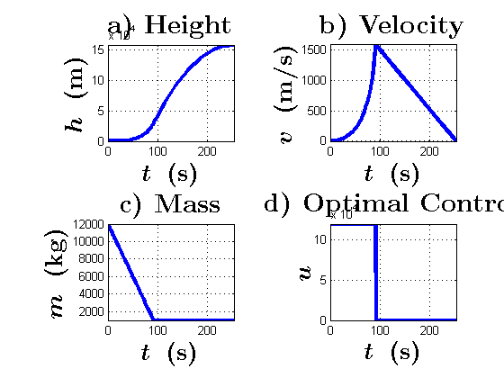

clear all; clf; clc; format long;
global g; g = 9.81;
global b;
global uMax;
global h0; h0 = 0.;
global v0; v0 = 0.;
global m0;
global mf;
m0 = 12000; mf = 1000;
b = 1e-3; uMax = 1.2e5;
tf = 253.302;
tSw = (m0 - mf)/(b*uMax);
if tSw > tf
tSw = tf;
end
py0 = -1.;
pv0 = -tf;
pm0 = -(tf*(uMax/m0 - g) + v0)/(b*uMax);
X0Guess = [tf;py0;pv0;pm0];
options=optimset('Display','iter','LargeScale','on','TolX',1e-6,'MaxIter',100,'MaxFunEvals',100);
[X0,FVAL,EXITFLAG]=fsolve(@shootingFunc,X0Guess,options);
EXITFLAG
tf = X0(1);
fprintf('Switching time tSw = %f\n',tSw);
fprintf('Final time tf = %f\n',tf);
options = odeset('AbsTol',1e-9,'RelTol',1e-9);
[t,x] = ode113(@(t,x) Zdyn(t,x), [0 tf], [h0;v0;m0;X0(2);X0(3);X0(4)], options);
subplot(221); plot(t,x(:,1),'linewidth',3) ;
title('\textbf{a) Height}','interpreter','latex','FontSize',22,'FontWeight','bold');
xlabel('\boldmath{$t$} \ \textbf{(s)}','interpreter','latex','FontSize',20,'FontWeight','bold');
ylabel('\boldmath{$h$} \ \textbf{(m)}','interpreter','latex','FontSize',20,'FontWeight','bold');
xlim([-inf inf]);
ylim([-inf inf]);
grid on;
subplot(222); plot(t,x(:,2),'linewidth',3) ;
title('\textbf{b) Velocity}','interpreter','latex','FontSize',22,'FontWeight','bold');
xlabel('\boldmath{$t$} \ \textbf{(s)}','interpreter','latex','FontSize',20,'FontWeight','bold');
ylabel('\boldmath{$v$} \ \textbf{(m/s)}','interpreter','latex','FontSize',20,'FontWeight','bold');
xlim([-inf inf]);
ylim([-inf inf]);
grid on;
subplot(223); plot(t,x(:,3),'linewidth',3) ;
title('\textbf{c) Mass}','interpreter','latex','FontSize',22,'FontWeight','bold');
xlabel('\boldmath{$t$} \ \textbf{(s)}','interpreter','latex','FontSize',20,'FontWeight','bold');
ylabel('\boldmath{$m$} \ \textbf{(kg)}','interpreter','latex','FontSize',20,'FontWeight','bold');
xlim([-inf inf]);
ylim([-inf inf]);
grid on;
control = zeros(size(t));
for i = 1:size(t)
phi = x(i,5)/x(i,3) - x(i,6)*b;
if phi < 0
control(i) = uMax;
end
end
subplot(224); plot(t,control,'linewidth',3);
title('\textbf{d) Optimal Control}','interpreter','latex','FontSize',22,'FontWeight','bold');
xlabel('\boldmath{$t$} \ \textbf{(s)}','interpreter','latex','FontSize',20,'FontWeight','bold');
ylabel('\boldmath{$u$}','interpreter','latex','FontSize',20,'FontWeight','bold');
xlim([-inf inf]);
ylim([-inf inf]);
grid on;
Norm of First-order Trust-region
Iteration Func-count f(x) step optimality radius
0 5 0.000198371 33.5 1
1 10 2.89571e-08 0.00202262 0.289 1
2 15 3.77863e-09 1.34771e-06 0.0905 1
3 16 3.77863e-09 0.00488286 0.0905 1
4 17 3.77863e-09 0.00122072 0.0905 0.00122
5 18 3.77863e-09 0.000305179 0.0905 0.000305
6 19 3.77863e-09 7.62947e-05 0.0905 7.63e-05
7 20 3.77863e-09 1.90737e-05 0.0905 1.91e-05
8 21 3.77863e-09 4.76842e-06 0.0905 4.77e-06
9 22 3.77863e-09 1.19211e-06 0.0905 1.19e-06
10 23 3.77863e-09 2.98026e-07 0.0905 2.98e-07
11 28 2.62575e-09 7.45066e-08 0.0125 7.45e-08
12 33 1.68146e-09 7.45066e-08 0.0037 7.45e-08
13 38 3.55833e-10 1.86266e-07 0.0134 1.86e-07
14 43 1.31491e-11 1.76786e-07 0.00639 4.66e-07
15 48 4.15071e-13 2.33601e-08 0.00116 4.66e-07
16 49 4.15071e-13 4.15036e-09 0.00116 4.66e-07
17 50 4.15071e-13 1.03759e-09 0.00116 1.04e-09
18 51 4.15071e-13 2.59397e-10 0.00116 2.59e-10
19 52 4.15071e-13 6.48493e-11 0.00116 6.48e-11
20 53 4.15071e-13 1.62123e-11 0.00116 1.62e-11
21 54 4.15071e-13 4.05308e-12 0.00116 4.05e-12
22 55 4.15071e-13 1.01327e-12 0.00116 1.01e-12
Equation solved, fsolve stalled.
fsolve stopped because the relative size of the current step is less than the
selected value of the step size tolerance squared and the vector of function values
is near zero as measured by the default value of the function tolerance.
EXITFLAG =
2
Switching time tSw = 91.666667
Final time tf = 253.303430
